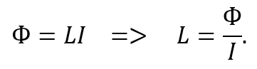
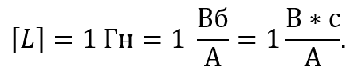
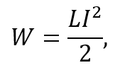
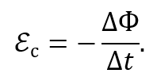
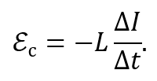
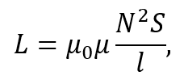

Індуктивність. Принцип роботи та характеристики
Індуктивність – фізична величина, що характеризує здатність провідника накопичувати енергію магнітного поля, коли в ньому протікає електричний струм.
Індуктивність контуру дорівнює відношенню магнітного потоку в ньому до сили струму, що протікає:

У системі СІ вимірюється в Гн (генрі):

Один генрі – це індуктивність такого замкненого контуру, в якому струм 1 А створює магнітний потік 1 Вб.
Енергію магнітного поля, створеного електричним струмом у колі, можна визначити за формулою:

де W – енергія, L – індуктивність контуру, I – сила струму в контурі.
Подібно до механічної інерції, яка перешкоджає зміні швидкості тіла, індуктивність кола перешкоджає зміні сили струму: при зростанні струму вона гальмує його збільшення, а при зменшенні – перешкоджає спадові. Це явище зумовлене виникненням ЕРС самоіндукції, яка з’являється під час зміни струму і спрямована проти цієї зміни, що і є проявом електричної інерції кола.
Відповідно до закону електромагнітної індукції, ЕРС самоіндукції можна записати так:

Підставивши формулу магнітного потоку через індуктивність, отримуємо:

З цієї формули випливає, що індуктивність чисельно дорівнює модулю ЕРС самоіндукції, що виникає у контурі під час зміни сили струму на 1 А протягом 1 с.

Рисунок 3.1.1. Умовне позначення котушки індуктивності
На практиці індуктивність зосереджена в спеціальному елементі електричного кола — котушці індуктивності, яка являє собою провідник, згорнутий у вигляді витків. У схемах здебільшого позначається як L, а її умовне графічне зображення наведено на рисунку 3.2.1.
Принцип роботи котушки індуктивності полягає в накопиченні та зберіганні енергії магнітного поля. Котушка виконує роль такого елемента електричного кола, що протидіє різким змінам сили струму. Під час протікання струму через витки котушки частина енергії електричного кола переходить в енергію магнітного поля. При зміні режиму роботи накопичена енергія повертається в коло і, зумовлюючи появу ЕРС самоіндукції, згладжує перехідні процеси.
Основною характеристикою котушки індуктивності є її індуктивність, яка чисельно дорівнює відношенню магнітного потоку, що пронизує котушку, до сили струму в колі. Зазвичай значення індуктивностей котушок варіюються від десятих часток мкГн до десятків Гн.
Індуктивність не залежить від сили струму в колі. Вона завжди є додатною величиною та визначається лише геометричними параметрами кола (розмірами, формою, кількістю витків) і магнітними властивостями середовища (наявністю, характеристиками осердя). Ці залежності добре помітні у формулі індуктивності соленоїда – котушки, довжина якої набагато більша, ніж її діаметр:

де μ0 – магнітна стала (позначає магнітні властивості вакууму і дорівнює 1,2566*10-6 Гн/м), μ – відносна магнітна проникність середовища, N – кількість витків, S – площа поперечного перерізу, l – довжина котушки.
Відносна магнітна проникність μ – характеристика осердя котушки; безрозмірна скалярна величина, яка визначає здатність матеріалу проводити та посилювати магнітне поле в порівнянні з вакуумом. Чим більша μ, тим ефективніше котушка накопичує енергію магнітного поля, і тим менше витків потрібно для досягнення певної індуктивності. Таким чином, феритові або залізні осердя з високим значенням μ дозволяють робити котушки більш компактними для трансформаторів та дроселів.